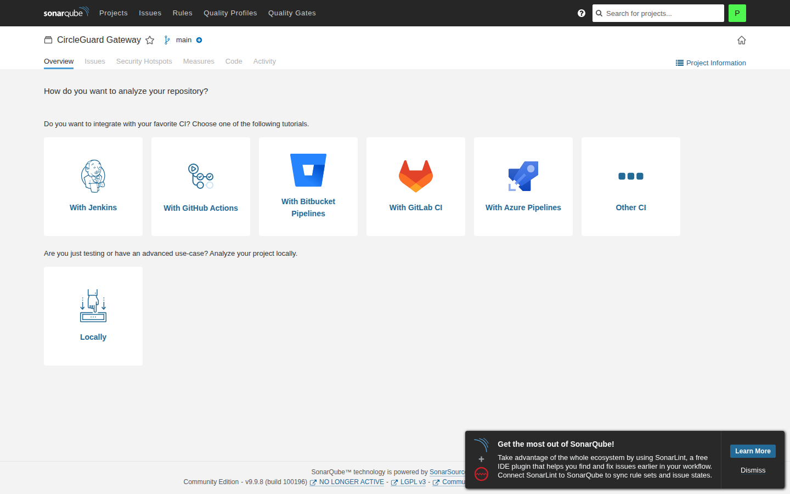
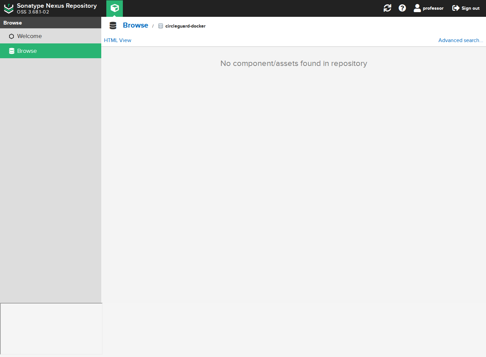

Rama: feat/HU-GATEWAY-01-configurar-servidores
Región: us-east-2
Fecha: 8 de noviembre de 2026
Alcance: microservicio gateway, servidores CI/CD y ambientes dev/stage/prod.
Se aprovisionaron cuatro instancias EC2 m7i-flex.large con Ubuntu 24.04 en us-east-2, una Elastic IP para cg-tools, dos Security Groups y una llave SSH nueva. En cg-tools quedaron funcionando Jenkins, SonarQube, PostgreSQL, Nexus, el registro privado 5000 y un ingress Nginx.
El gateway tiene pruebas unitarias, integración real con Redis y E2E Playwright. La cobertura de líneas medida es 95.92 %.
El pipeline aún no ha corrido porque el job multibranch existe pero Jenkins tiene 0 ramas escaneadas.
| Host | Instancia | IP privada | IP pública | Función |
|---|---|---|---|---|
| cg-tools | i-0f39bae4a25328be1 | 172.31.20.46 | 77.112.223.174 | Jenkins, SonarQube, Nexus, registro, ingress |
| cg-dev | i-0168db88a32069ccf | 172.31.19.75 | 3.141.13.185 | gateway + Redis |
| cg-stage | i-0a65406c7c44c52ec | 172.31.29.207 | 18.222.218.169 | gateway + Redis |
| cg-prod | i-05084037bd8177db7 | 172.31.20.75 | 3.16.131.65 | gateway + Redis |
| Recurso | Valor |
|---|---|
| Security Group tools | sg-0ed6257fcc34b0f5b |
| Security Group ambientes | sg-03ed767c4bbcbf5fe |
| Key pair | circleguard-e12-key |
| PEM | infra/state/circleguard-e12-key.pem |
| Registro Docker | 172.31.20.46:5000 |
| Servicio | URL | Estado |
|---|---|---|
| Jenkins | http://77.112.223.174:8080 | 200 OK |
| SonarQube | http://77.112.223.174:9000 | 200 OK, UP |
| Nexus | http://77.112.223.174:8081 | 200 OK |
| Ingress | http://77.112.223.174/ | 502, gateway pendiente |
| Registro | 172.31.20.46:5000 | privado |
Contenedores en cg-tools:
cg-jenkins healthy
cg-sonarqube healthy
cg-sonar-db healthy
cg-nexus healthy
cg-ingress running
Sesión iniciada como professor. El job circleguard-gateway está creado, pero el folder está vacío porque aún no se ha escaneado la rama.
Sesión iniciada como professor. El proyecto circleguard-gateway-service existe; todavía no tiene análisis porque el pipeline no ha corrido.

Sesión iniciada como professor. El repositorio circleguard-docker existe; todavía no tiene imagen ni JAR porque el pipeline no ha publicado.

Líneas: 95.92 %
Instrucciones: 97.44 %
Ramas: 72.73 %
| Prueba | Resultado |
|---|---|
| Unitarias gateway | 16 pruebas, 0 fallos |
| Integración Redis | 3 pruebas, 0 fallos |
| E2E Playwright | 3 pruebas añadidas |
Reporte JaCoCo:
services/circleguard-gateway-service/build/reports/jacoco/test/html/index.html
dc353e9 docs ( informe ) : add e1.2 step by step pdf
32500ad docs ( infra ) : add e1.2 operations tutorial
46b367a fix ( infra ) : stabilize sonarqube and jenkins configuration
03e583a test ( gateway ) : add redis integration and e2e coverage
9de989f chore ( git ) : align github flow branch rules
c87f143 refactor ( infra ) : consolidate bootstrap scripts and remove generated files
7bcd41e feat ( infra ) : support four hosts, private registry and ingress
a1fb650 feat ( infra ) : use m7i-flex.xlarge and add cost controls
404428e docs ( git ) : document commit format and scope rules
| Problema | Solución |
|---|---|
| SCP bloqueaba DescribeInstances en us-east-1 | Se trabajó en us-east-2 |
| Security Groups con dependencias cruzadas | Se revocaron reglas y se recrearon |
| SonarQube no iniciaba | -Xms1g -Xmx1g en Elasticsearch |
| SonarQube unhealthy | Healthcheck con wget |
Jenkins JCasC fallaba con fileOnMaster |
directEntry con readFile |
Jenkins fallaba con matrix |
globalMatrix.entries |
| Testcontainers no encontraba Docker | docker-java.properties con api.version=1.44 |
| Puerto | Origen | Servicio |
|---|---|---|
| 22 | admin y SG-tools | SSH |
| 8080 | Internet | Jenkins autenticado |
| 9000 | teacher/admin | SonarQube |
| 8081 | teacher/admin | Nexus |
| 80 | Internet | ingress |
| 5000 | SG-envs | registro privado |
| 8087 | SG-tools | gateway |
TEACHER_CIDR=0.0.0.0/0 deja SonarQube y Nexus abiertos. Cambiarlo por la IP del profesor cuando esté disponible.
4 × m7i-flex.large × 180 h = 69.12 USD
EBS 130 GB proporcional = 2.56 USD
4 IPv4 × 180 h = 3.60 USD
Total = 75.28 USD
source infra/state/aws.env
source infra/state/tools.env
crumb=$(curl -s -c /tmp/jcookies \
-u "admin:${JENKINS_ADMIN_PASSWORD}" \
"http://${TOOLS_IP}:8080/crumbIssuer/api/json" | jq -r .crumb)
curl -b /tmp/jcookies \
-u "admin:${JENKINS_ADMIN_PASSWORD}" \
-H "Jenkins-Crumb: ${crumb}" \
-X POST "http://${TOOLS_IP}:8080/job/circleguard-gateway/build?delay=0"
cd tests/e2e
npm install
npx playwright install --with-deps chromium
GATEWAY_URL=http://3.141.13.185:8087 npx playwright test
./infra/bootstrap/bootstrap-stop.sh
Están en:
infra/state/tools.env
Usuarios:
Jenkins: admin / profesor
SonarQube: admin / professor
Nexus: admin / nexus / professor
No incluir contraseñas, tokens ni la llave privada en capturas o informes.
La infraestructura E1.2 está levantada y las herramientas están saludables. El acceso del profesor quedó configurado en Jenkins, SonarQube y Nexus. El gateway supera el 60 % de cobertura y tiene integración real con Redis. Falta ejecutar el pipeline para que las capturas muestren ramas, análisis, artefactos y despliegues reales.